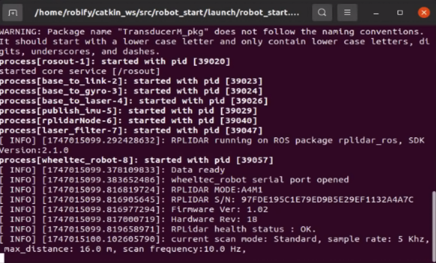

🛠️ Chassis and LiDAR Driver Startup
Before using other functions of the RobiS robot, it's necessary to activate essential hardware modules such as the chassis drive, LiDAR, and IMU.
🚀 Start All Core Drivers
To start all key drivers in one terminal, run the following command:
roslaunch robot_start robot_start.launch
If successful, the robot's chassis and sensors will initialize correctly and begin publishing data.

🧩 Start Drivers Individually
If you need to start each component separately (e.g., for debugging or selective usage), use the following commands in separate terminals:
🔄 Chassis Drive Only
roslaunch car_control car_control.launch
📡 LiDAR Sensor Only
roslaunch rplidar_ros rplidar_c1.launch
🧭 IMU Sensor Only
roslaunch TransducerM_pkg imu.launch
💡 Tip: Use
rqt_graphorrostopic listto verify whether nodes are running and topics are being published.
Once the drivers are active, you can proceed to 2D mapping, navigation, or autonomous operations.